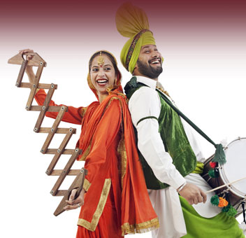

Baisakhi: The harvest festival Baisakhi is celebrated with much fervor and enthusiasm in Mashobra. The harvest festival is one of the important festivals of the state of Himachal Pradesh and you will be able to take part in the celebrations if you are visiting in the month of April.